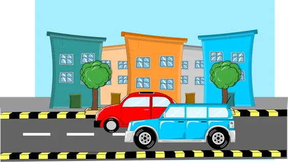
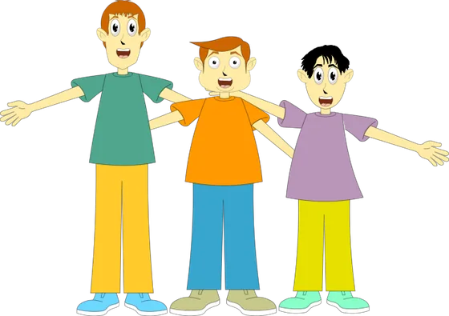
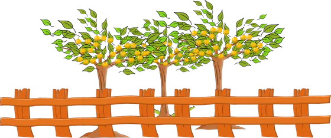
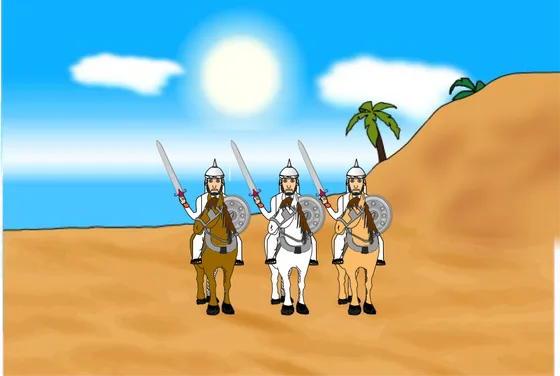
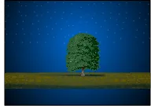
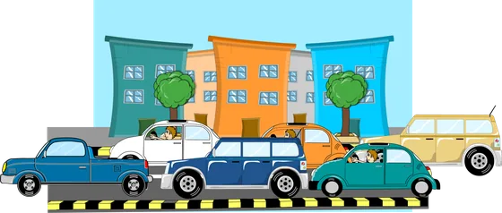
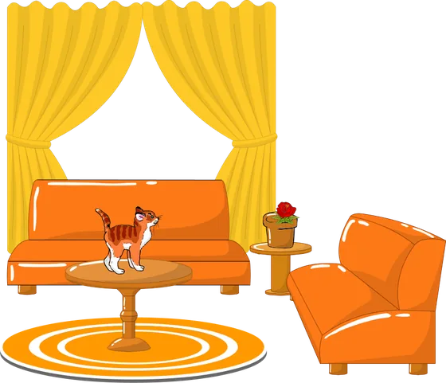

أنواع خبر المبتدأ والنواسخ
الدرس 2 من 3 — التراكيب
أُلاحظ
أقرأ الأمثلة وأستمع إليها، وألاحظ الكلمات الملوّنة.
- الرَّجُلُ سَمِينٌ
- السَّيَّارَتَانِ نَظِيفَتَانِ
- الْأَصْدِقَاءُ مُتَحَابُّونَ
- الشَّجَرَاتُ مُثْمِرَاتٌ
أستنتج
خبر المبتدأاسمٌ مرفوع وهو العنصر الذي يُتحدَّث به عن المبتدأ، وتتمّ به الفائدة، ويكوّن مع المبتدأ جملةً مفيدة.
مرفوعاضغط على الكلمة الملوّنة لترى إعرابها، وعلى 🔊 لتستمع.
يأتي خبر المبتدأ على صور
- اسم مفرد أي ليس جملةً ولا شبهَ جملة، وقد يكون مفرداً أو مثنّى أو جمعَ مذكّرٍ سالماً أو جمعَ مؤنّثٍ سالماً أو جمعَ تكسير.مفردالرَّجُلُ سَمِينٌ

مثنّىالسَّيَّارَتَانِ نَظِيفَتَانِ
جمع مذكّر سالمالْأَصْدِقَاءُ مُتَحَابُّونَ
جمع مؤنّث سالمالشَّجَرَاتُ مُثْمِرَاتٌ
جمع تكسيرالْفُرْسَانُ أَقْوِيَاءُ - جملة وتكون جملةً اسميةً أو جملةً فعلية.

جملة اسميةاللَّيْلُ مَنْظَرُهُ جَمِيلٌ
جملة فعليةالشَّارِعُ يَزْدَحِمُ بِالسَّيَّارَاتِ - شبه جملة وتكون جارّاً ومجروراً أو ظرفاً.

شبه جملة ظرفيةالْقِطَّةُ فَوْقَ الطَّاوِلَةِجار ومجرورالسَّمَكُ فِي الْحَوْضِ
إذا كان الخبر جملةً فلا بدّ أن تشتمل على ضميرٍ يعود على المبتدأ، مثل الضمير في «منظرُه».
أُطبّق
1نوع الخبر في: «السماءُ صافيةٌ»
2نوع الخبر في: «الْقِطَارُ يَسِيرُ بِسُرْعَةٍ»
3نوع الخبر في: «المعلّمُ في القسمِ»
4نوع الخبر في: «السيّارةُ أمامَ البيتِ»
5نوع الخبر في: «البستانُ ثمارُه ناضجةٌ»
6اختر الخبر الصحيح: «اللاعبون …»
7ما إعراب «سمينٌ» في: «الرَّجُلُ سَمِينٌ»؟
8ما إعراب «نظيفتان» في: «السَّيَّارَتَانِ نَظِيفَتَانِ»؟
إجابات صحيحة من أول محاولة:
أتمرّن أكثر
أستمع، ثمّ أرتّب الكلمات لأكوّن الجملة:
أستمع، ثمّ أكتب ما أسمع:
أستمع، ثمّ أكتب ما أسمع:
✓ أنهيتَ هذا الدرس
دروس العربية — للاستعمال التعليمي.